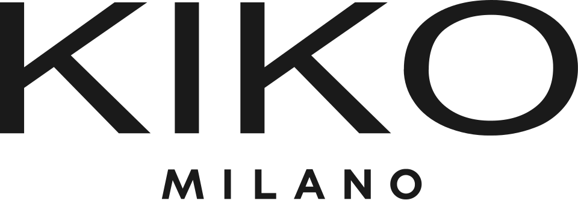

홈 > 브랜드 매거진 > Kiko Milano
Kiko Milano
키코밀라노(Kiko Milano)는 이탈리아 베르가모에서 시작된 색조 중심 화장품 브랜드이다.
산업 분야 뷰티·퍼스널케어 · 공개 등급 자료 기반 · 브랜드 평가 4.1 ★

한눈에 보는 브랜드
키코 밀라노(Kiko Milano)는 1997년 이탈리아 베르가모에서 안토니오·스테파노 페르카시 부자가 설립한 색조 중심 화장품 SPA 브랜드다. 첫 매장 출입문에 새긴 '비 왓 유 원트(Be What You Want)' 선언으로 출발해 자체 직영 매장 네트워크를 무기로 성장했다.
두 전환점은 2022년 시작한 프리미엄화(할인 축소·고부가 라인 도입) 전략과 2024년 4월 사모펀드 L 캐터턴의 경영권 인수다. 현재 세계 70여 개국에 1,100개 이상 매장을 운영하며 2023년 순매출 약 8억 유로, 연 20% 안팎 성장을 기록했다.
브랜드 관점
키코 밀라노를 이해하는 핵심은 '이탈리아식 메이크업 SPA'라는 포지셔닝이다. 의류 SPA처럼 기획·생산·직영 유통을 수직 통합해 1천 종 넘는 색조 제품을 빠르게 회전시키고, 대량 마케팅 대신 매장 경험과 제품 자체에 자원을 집중한다.
가격대는 매스마켓과 럭셔리 사이 빈 공간을 노린다. 대다수 메이크업이 20파운드 미만, 다수 품목은 5유로대로 맥·샬롯 틸버리보다 싸지만 발색·지속력은 드러그스토어 저가 브랜드를 앞선다.
2022년 이후에는 할인을 줄이고 고가 신제품 비중을 키우는 방식으로 객단가를 올리되 진입 가격은 낮게 유지해 폭넓은 소득층을 동시에 흡수한다. 유럽 색조 4위(점유율 약 4.5%), 이탈리아 1위, 프랑스 2위라는 성과가 이 전략의 결과다.
한국 독자에게 익숙한 비유로 보면, 화장품판 자라(Zara)이자 색조에 특화한 이탈리아형 올리브영 PB에 가깝다. 다만 한국 정식 진출 여부는 미공개이며, 현재 아시아 확장과 미국 시장 공략이 우선순위다.
시작과 성장
1997년은 유럽 뷰티 시장이 백화점 고가 브랜드와 약국·드러그스토어 저가 제품으로 양극화돼 있던 시기다. 의류 프랜차이즈 운영으로 잔뼈가 굵은 페르카시 가문은 그 사이의 빈틈, 즉 '저렴하지만 전문가급 색조'를 직영 매장에서 파는 모델을 구상했다.
스테파노 페르카시가 아버지 안토니오의 지원을 받아 밀라노 소형 매장에서 첫발을 뗐고, 출입문에 새긴 '비 왓 유 원트'가 브랜드 철학이 됐다. 첫 전환점은 2022년부터의 프리미엄화로, 상시 할인을 줄이고 스킨케어·향수·헤어 등 고부가 라인을 더해 제품 믹스로 단가를 끌어올렸다.
두 번째 전환점은 2024년 4월 LVMH가 후원하는 L 캐터턴의 경영권 인수다. 페르카시 가문은 상당 지분을 유지했고, 인수 자금은 미국 진출과 옴니채널 강화에 투입된다.
확장 측면에서는 2024년 기준 66개국 1,100여 매장, 2025년 70여 개국으로 늘었고, 2025년 10월 릴라이언스와 손잡고 인도 델리에 첫 매장을 열었다. 매출은 2021년 4억7천만 유로에서 2024년 약 9억 유로로 사실상 두 배가 됐다.
브랜드 아이덴티티
브랜드 가치의 중심에는 '비 왓 유 원트'가 상징하는 자기표현과 포용성이 있다. 모든 피부 톤·개성·스타일을 위한 폭넓은 색조 구성으로 소비자가 자유롭게 실험하도록 돕는다는 약속이다.
비주얼 아이덴티티는 'KIKO MILANO'를 또렷한 산세리프 워드마크로 풀어쓴 절제된 형태로, 이탈리아 디자인 감각과 모던한 매장 인테리어가 결합돼 럭셔리 분위기를 저가에 구현한다. 타깃은 스타일과 실속을 함께 따지는 젊은 트렌드 세대이며, 메이크업 입문자부터 전문가까지 폭이 넓고 최근에는 Z세대를 정조준한다.
브랜드 보이스는 권능감과 즐거움을 강조하며, 한손 립스틱처럼 소셜미디어 세대의 사용 맥락을 겨냥한 제품 화법으로 드러난다.
제품과 서비스
취급 카테고리는 색조 메이크업이 핵심으로 립글로스·립마커·립스틱, 아이섀도 팔레트·마스카라 등 립·아이 라인이 가장 강하다. 여기에 토너·세럼 등 스킨케어, 헤어케어, 향수, 뷰티 도구까지 1천 종 이상을 갖춰 확장 중이다.
채널은 70여 개국 직영 매장 네트워크와 자체 이커머스를 양축으로 한다.
현재 상태
본사는 이탈리아 베르가모에 있다. 지배구조는 2024년 4월 L 캐터턴(LVMH 후원)이 경영권 지분을 인수하고 창업주 페르카시 가문이 상당 지분을 유지하는 구조로, 인수 금액 등 거래 조건은 미공개다.
70여 개국에서 1,100개 이상 매장을 운영하며 2025년 매출은 약 9억5천만 유로로 10억 달러 선에 근접한 것으로 전망된다. 미국·인도 등 신규 시장 확장과 2027년 12억5천만 유로 매출 목표를 추진 중이다.
한국 정식 진출 현황은 미공개다.
타임라인
정리된 연도형 이벤트가 없습니다.
BI/CI 변천사
함께 읽을 브랜드
 뷰티·퍼스널케어 · 디렉토리올리브영
뷰티·퍼스널케어 · 디렉토리올리브영올리브영은 대한민국의 헬스앤뷰티 리테일 브랜드입니다. 화장품, 스킨케어, 건강식품, 퍼스널케어 상품을 큐레이션하며 K뷰티 유통의 대표 접점으로 자리 잡았습니다.
 뷰티·퍼스널케어 · 자료 기반설화수
뷰티·퍼스널케어 · 자료 기반설화수설화수(Sulwhasoo)는 아모레퍼시픽이 1997년 론칭한 대한민국의 한방 럭셔리 스킨케어 브랜드다. 한방 원료와 프리미엄 포지셔닝으로 아모레퍼시픽을 대표하는 럭셔...
 패션·럭셔리 · 편집 검수자라
패션·럭셔리 · 편집 검수자라자라는 패션을 예측하기보다 시장의 반응을 빠르게 읽고 다시 매장으로 돌려보내는 브랜드다. 트렌드를 길게 기획하는 대신 고객 반응과 유통 속도를 무기로 삼아, 패션을...
 뷰티·퍼스널케어 · 자료 기반LG생활건강
뷰티·퍼스널케어 · 자료 기반LG생활건강LG생활건강(LG H&H Co., Ltd.)은 화장품·생활용품·음료를 아우르는 한국 기업으로, 현 법인은 2001년 LG화학에서 분할 신설됐다.
 뷰티·퍼스널케어 · 자료 기반달바
뷰티·퍼스널케어 · 자료 기반달바달바(d'Alba)는 달바글로벌이 전개하는 대한민국의 프리미엄 비건 스킨케어 브랜드다. 2016년 론칭했으며 화이트 트러플 성분의 미스트 세럼으로 글로벌 베스트셀러를...
 뷰티·퍼스널케어 · 편집 검수니베아
뷰티·퍼스널케어 · 편집 검수니베아니베아(NIVEA)는 1911년 독일 바이어스도르프(Beiersdorf)가 출시한 글로벌 스킨케어 브랜드다. 세계 최초의 안정적인 유중수(油中水) 유화 크림을 선보이...
 뷰티·퍼스널케어 · 자료 기반랑콤
뷰티·퍼스널케어 · 자료 기반랑콤랑콤(Lancôme)은 로레알 그룹 산하의 프랑스 럭셔리 화장품 브랜드이다.
 뷰티·퍼스널케어 · 자료 기반헤라
뷰티·퍼스널케어 · 자료 기반헤라헤라(HERA)는 아모레퍼시픽의 프리미엄 화장품 브랜드로, 1995년 론칭했다.